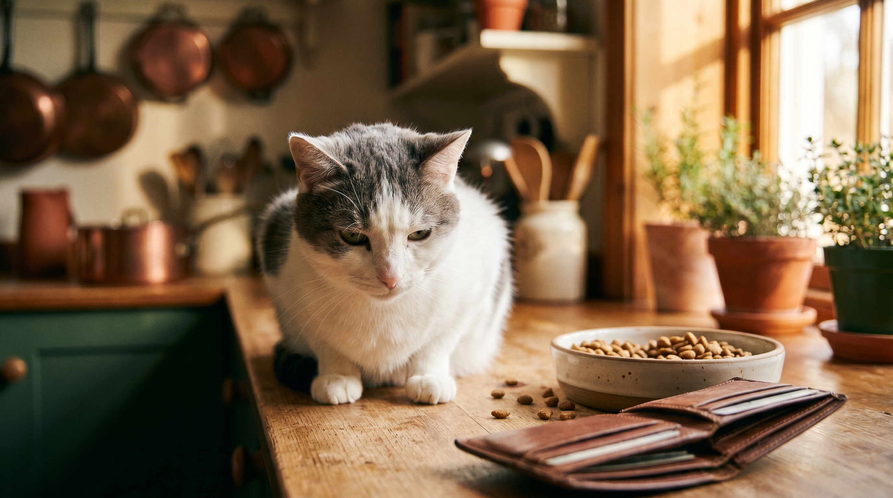

«Возьми кошку, она же не дорогая, ест немного, в туалет на песок» — стандартная фраза, после которой через год хозяин впервые садится с тетрадкой и считает. Получается не 8 000 ₽ за корм, а 12 раз по 5 500 ₽. Плюс врач, страховка, наполнитель, лакомства, игрушки, переноска, плановая дегельминтизация. Разбираем по статьям, считаем три уровня содержания, показываем где экономия безопасна, а где — самоубийство.
🐾 Не уверены, что это опасно?
Опишите симптом в AnimaLife — AI-ветеринар за минуту подскажет, что в пределах нормы, а когда пора к врачу.
Семь обязательных статей и три условно-обязательных. Обязательные — без них кот не живёт нормально: корм, наполнитель, плановый осмотр у ветеринара, обработка от паразитов, ежегодные прививки, расходники (миски, переноска, когтеточка), коммунальные мелочи (вода, свет от ночников у миски — да, это тоже считается, когда у вас 4 кота). Условно-обязательные: страховка, лакомства, игрушки.
Цены ниже — средние по РФ на май 2026, проверены по «ЭкоЛавке», «Четыре Лапы», «Petshop.ru», региональным ветклиникам и фарм-маркетплейсам. Курс ₽ к USD ≈ 89.
Когда бюджет реально жмёт, но кот должен жить здорово. Подходит для одного взрослого здорового кота 4-7 кг без хронических заболеваний.
Итого: 38 200 ₽/год = 3 183 ₽/мес. Это абсолютно реалистичный минимум, при котором кот не страдает. Снижать ниже — за счёт чего-то критичного (корм-эконом класса = аллергии и почки; пропуск прививок = риск летальных вирусов).
Городская семья, кот любимый член семьи, нет цели сэкономить любой ценой, но и переплачивать без причины не хочется.
Итого: 78 500 ₽/год = 6 542 ₽/мес. Это среднестатистический уровень для города-миллионника. Большинство хозяев на этом уровне и живёт.
Породистый кот, активная медицина, страховка, груминг. Например, мейн-кун или сфинкс — большие по размеру или с особым уходом.
Итого: 145 800 ₽/год = 12 150 ₽/мес. Уровень для тех, кто хочет «как для себя».
Корм: переход с супер-премиум на премиум холистики (например, с Royal Canin на Acana) часто даёт лучшее качество за меньшие деньги. Главное — состав, не упаковка.
Наполнитель: покупка большим объёмом (15-20 кг мешок) экономит до 30%. Сейчас на маркетплейсах акции почти каждую неделю.
Когтеточки/лежанки: большинство «фирменных» аксессуаров — переплата за бренд. Базовая когтеточка из джута за 800 ₽ работает идентично «дизайнерской» за 5 000 ₽.
Игрушки: кот играет с фантиком от конфеты и крышкой от молока ровно столько же, сколько с интерактивной игрушкой за 2 000 ₽. Меняйте чаще, а не дороже.
Корм эконом-класса (Whiskas, Felix, Friskies): белок преимущественно растительный, много злаков, химические ароматизаторы. Через 3-5 лет — почки и аллергии. Лечение почечной недостаточности — 8-15 тыс. ₽/мес пожизненно.
Пропуск вакцинаций: одна вспышка панлейкопении в подъезде = смерть непривитого кота за 48 часов. Кальцивироз и ринотрахеит — пожизненные хронические носители, постоянные обострения.
Пропуск антипаразитарной обработки: блохи переносят гельминтов, гельминты — основная причина хронических расстройств пищеварения и анемии.
«Дешёвый» ветеринар: низкая цена консультации почти всегда компенсируется навязыванием препаратов и анализов. Лучше один проверенный — пусть и дороже за визит.
🐾 Питомец ведёт себя странно?
AnimaLife расшифрует поведение кошки и собаки и подскажет, что делать. Попробуйте бесплатно прямо в мессенджере.
По данным опроса 1 800 владельцев кошек (Petstory, март 2026):
Открыть таблицу или приложение учёта расходов, отдельную статью «питомец», вписать туда последний чек. Через 3 месяца у вас будет реальная цифра, на которой можно строить решения — от выбора корма до решения «брать второго или нет».
Главное правило: кошки — не дешёвое домашнее животное, как принято считать. Но и не страшно дорогое. Просто посчитайте честно, отложите резерв, не пропускайте обязательное. Тогда жизнь с котом — это радость, а не сюрприз раз в полгода.